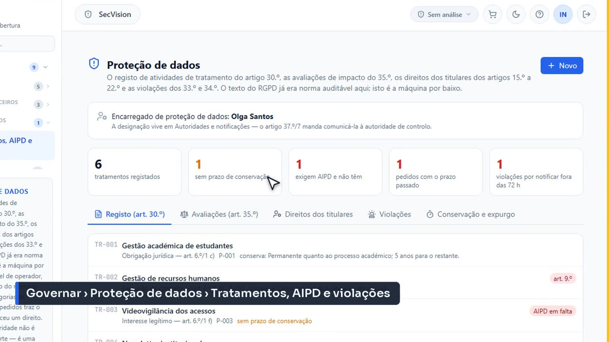
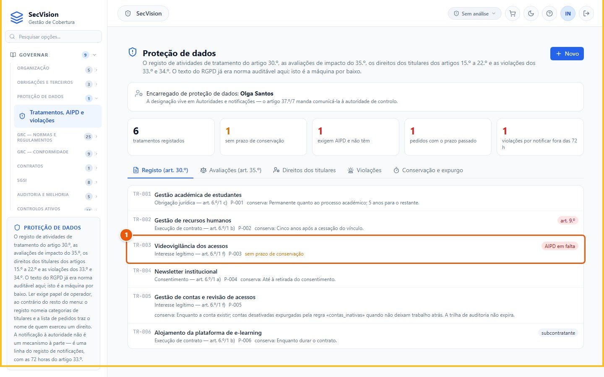
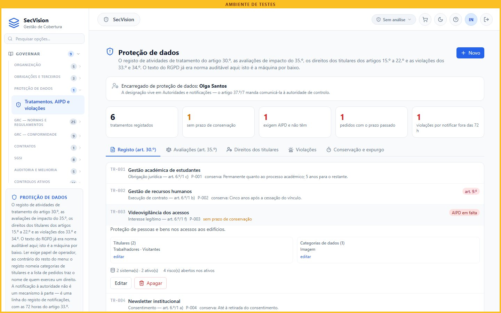
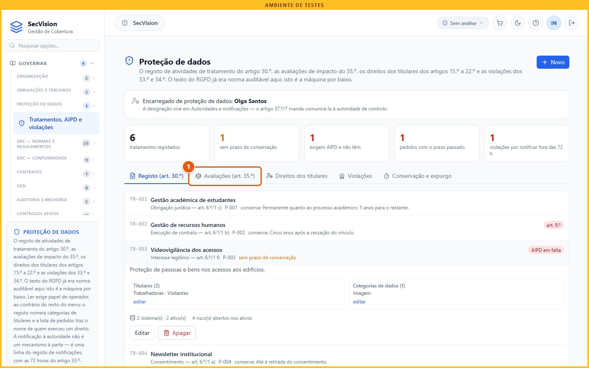
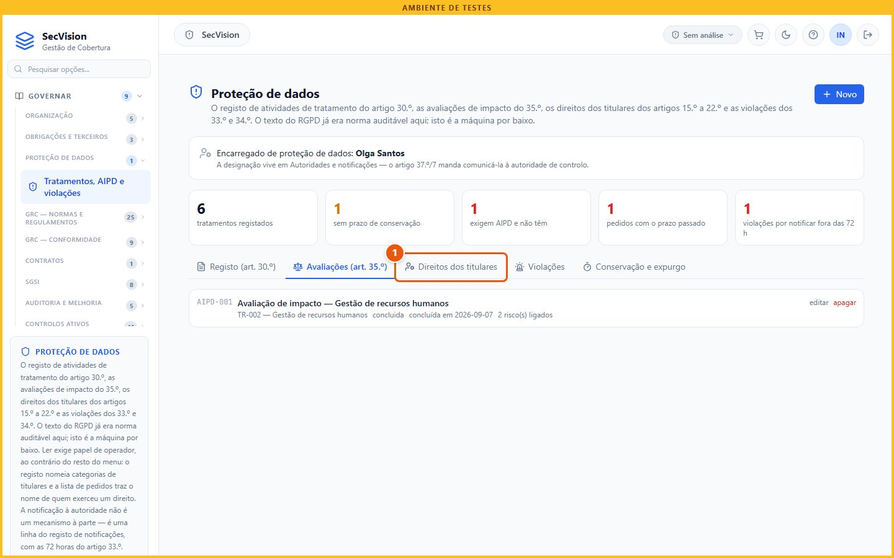
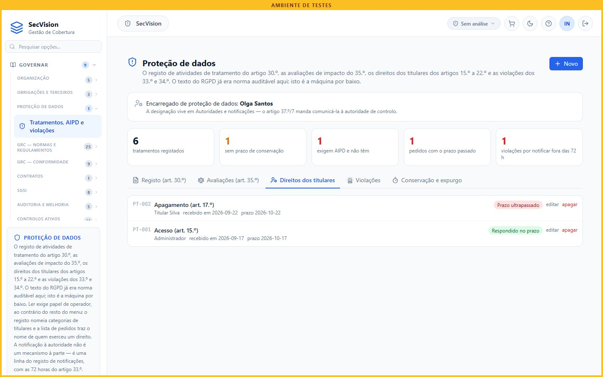
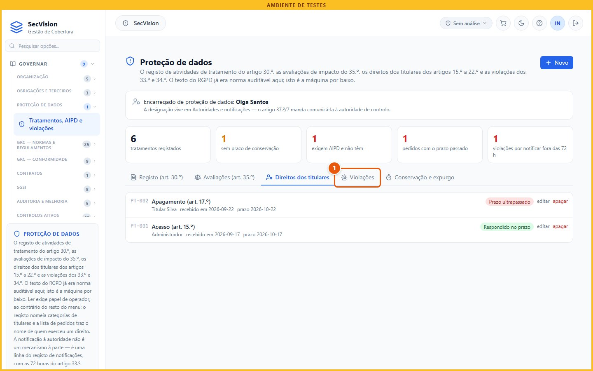
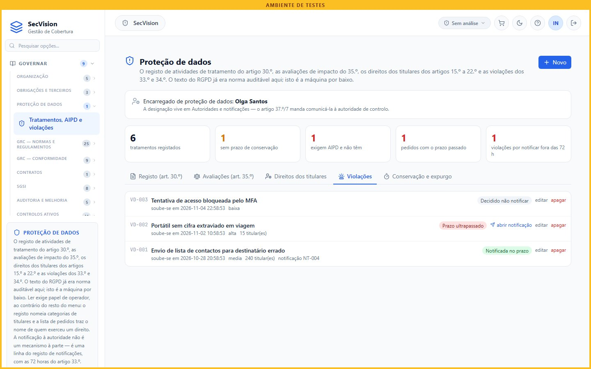

Proteção de dados pessoais
O registo de atividades de tratamento, as avaliações de impacto, os pedidos dos titulares, as violações com o relógio das 72 horas, e o expurgo pelos prazos de conservação.
A segurança da informação e a proteção de dados pessoais andam juntas. Nesta página vemos o ecrã que serve o Regulamento Geral sobre a Proteção de Dados, separador a separador, cada um com o seu artigo.
Porquê
Cada separador corresponde a um artigo. O registo de atividades de tratamento, do artigo 30.º do RGPD. As avaliações de impacto, do 35.º. Os pedidos dos titulares, com o prazo de um mês. As violações, com as setenta e duas horas do artigo 33.º do RGPD. E a conservação e o expurgo.
Um separador por artigo
Separador |
Artigo do RGPD |
O que guarda |
|---|---|---|
Registo |
art. 30.º |
cada tratamento: finalidade, base legal, titulares, dados, conservação |
Avaliações |
art. 35.º |
a avaliação de impacto dos tratamentos que a exigem |
Direitos dos titulares |
art. 12.º a art. 22.º |
cada pedido, com o prazo de um mês |
Violações |
art. 33.º e art. 34.º |
cada violação, com as 72 horas para notificar a CNPD |
Conservação e expurgo |
art. 5.º |
os prazos de conservação, aplicados |
Antes de abrir o ecrã
Este trabalho é do encarregado de proteção de dados, com cada serviço: que dados trata, para quê, com que base legal, e por quanto tempo os guarda. Os prazos de conservação precisam da base escrita — a lei ou a decisão que os fixa.
O que pedir a quem
Informação |
Quem a tem |
|---|---|
Os tratamentos de cada serviço, com finalidade e base legal |
responsáveis dos serviços; encarregado |
Prazos de conservação, com a base que os fixa |
jurídico; arquivo |
Pedidos de titulares recebidos |
secretaria; encarregado |
Violações de dados ocorridas |
encarregado; informática |
O registo
Menu: Governar › Proteção de dados › Tratamentos, AIPD e violações
No menu Governar, Proteção de dados. É o único ecrã do menu Governar que exige o papel de operador até para ler: o registo nomeia titulares e finalidades, e saber que alguém pediu o apagamento dos seus dados é, ele próprio, um dado sensível.
A lista já assinala o que falta sem ser preciso abrir: «sem prazo de conservação» é uma alínea do artigo 30.º do RGPD por cumprir, e «avaliação em falta» é o artigo 35.º do RGPD a bater à porta.

O ecrã em Governar › Proteção de dados › Tratamentos, AIPD e violações.
Abrimos um tratamento. Aparece o que o artigo 30.º do RGPD enumera, pela ordem em que o enumera: finalidade, categorias de titulares e de dados, destinatários, transferências, prazo de conservação e medidas de segurança. E onde os dados vivem: os ativos de informação e os sistemas.

Um tratamento (1 de 3).
Clique em TR-003.

Um tratamento (2 de 3).

Um tratamento (3 de 3).
Avaliações e direitos
As avaliações de impacto: uma por cada tratamento que a exija. Concluir obriga aos quatro conteúdos que o artigo 35.º do RGPD enumera, e a plataforma diz quais faltam. Os riscos ligam-se ao registo de risco que já existe — não há um segundo motor de risco.
Nos direitos dos titulares, cada pedido tem a data de receção, e é dela que corre o mês para responder. Indeferir exige fundamento, e prorrogar exige motivo.

Avaliações de impacto e pedidos dos titulares (1 de 3).
Clique em Avaliações (art. 35.º).

Avaliações de impacto e pedidos dos titulares (2 de 3).
Clique em Direitos dos titulares.

Avaliações de impacto e pedidos dos titulares (3 de 3).
Violações
Nas violações, é a data em que se teve conhecimento que arranca as setenta e duas horas — não a data em que aconteceu. O botão abrir notificação cria a comunicação à CNPD no mesmo registo das notificações ao CNCS.
E decidir não notificar é uma decisão prevista na lei, quando a violação não traz risco para as pessoas — mas exige que se escreva porquê. Sem o fundamento escrito, o relógio continua a correr.

Violações — o relógio das 72 horas (1 de 2).
Clique em Violações.

Violações — o relógio das 72 horas (2 de 2).
Resumo
A plataforma aponta os incumprimentos a decorrer, e pode apagar o que passou do prazo de conservação — mas cada regra nasce desligada, e só se liga com a base escrita: um expurgo apaga prova.
E não notifica a CNPD: guarda a notificação e conta as setenta e duas horas. A comunicação faz-se no formulário da própria CNPD.
O que a plataforma faz — e o que não faz
Aponta os incumprimentos a decorrer: avaliações em falta, pedidos fora de prazo, violações por notificar.
Apaga o que passou do prazo de conservação — só depois de cada regra ser ligada, com a base escrita.
O encarregado é uma designação de Autoridades, designações e notificações; a notificação à CNPD é uma linha do mesmo registo.
Não notifica a CNPD: a notificação faz-se no formulário da CNPD.